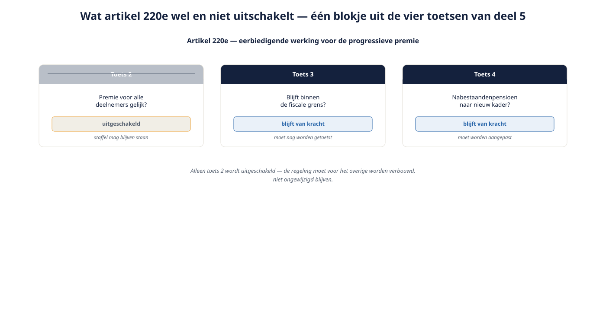
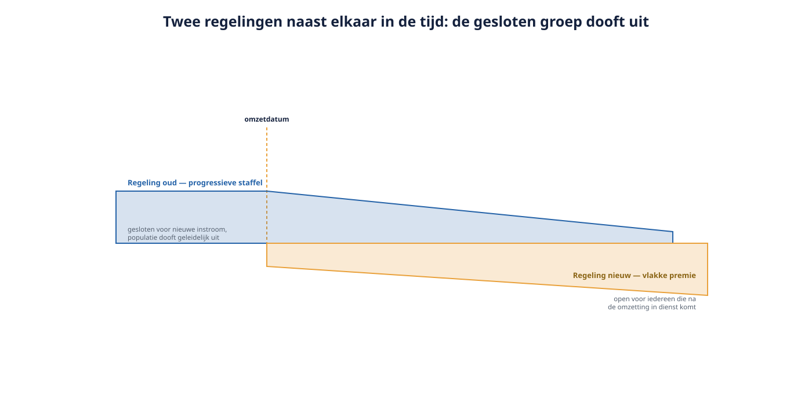

Cursus Nederlandse pensioenverzekering · Niveau 1 (Wft Adviseur Pensioen) · Deel 6 van 30
Eén woord, niet de hele regeling.
In deel 5 leerde u dat de staffel van Van Doorn Techniek — 8,4% tot 26,1% — niet voldoet aan toets 2. Dit deel beantwoordt de vraag die sinds deel 4 op de flap staat: mag die staffel dan blijven? Het antwoord is: onder voorwaarden, voor een afgebakende groep, en met een reikwijdte die veel beperkter is dan werkgevers hopen. Artikel 220e Pensioenwet redt precies één ding — de leeftijdsafhankelijke premie — en niets daaromheen. Voor Karel Sanders (58) verandert er niets aan zijn premie; voor Yasmin Chaibi (26) ligt dat genuanceerder dan het op het eerste gezicht lijkt.
7secties
±1,5uleestijd + werkboek
8controlevragen
1artikel, precies uitgeschakeld
Positionering. Deze cursus is een voorbereiding op de examens voor de Wft-beroepskwalificatie Adviseur Pensioen (de modules Basis, Vermogen en Pensioen) en uitdrukkelijk geen vervanging van het officiële examenmateriaal. Het College Deskundigheid Financiële Dienstverlening (CDFD) stelt de eind- en toetstermen vast en is daarin leidend. Controleer bij inschrijving altijd het actuele aanbod, de kosten en de examenvorm bij uw opleider; informatie in dit materiaal is geverifieerd in augustus 2026 en kan wijzigen.
Niveau 1: ➊ Het Nederlandse pensioenstelsel in vogelvlucht → ➋ De pensioendriehoek → ➌ Soorten pensioenovereenkomsten, oud en nieuw → ➍ Verplichtstelling, werkingssfeer en vrijstelling → ➎ Wtp of niet-Wtp: de scheidslijn → ➏ Overgangsrecht I: de eerbiedigende werking (hier) → ➐ Overgangsrecht II: transitieplan en compensatie → ➑ De risicodekkingen → ➒ De deelnemersreis → ➓ Examentraining en capstone
01
Waar we vandaan komen
⏱ 5 min
In deel 5 leerde u de vier toetsen. Toets 2 luidde: is de premie voor alle deelnemers gelijk? Bij Van Doorn Techniek is het antwoord nee — daar geldt een staffel van 8,4% tot 26,1%.
Dit deel beantwoordt de vraag die daarop volgt en die sinds deel 4 op de flap staat: mag die staffel blijven?
Het antwoord is: onder voorwaarden, voor een afgebakende groep, en met een reikwijdte die veel beperkter is dan werkgevers hopen.
02
Wat de eerbiedigende werking precies doet
⏱ 12 min
De hoofdregel van de Wtp staat in artikel 17 van de Pensioenwet: de premie is voor alle deelnemers een gelijk percentage van het pensioengevend loon. Artikel 220e maakt daarop één uitzondering.
Let op het woord "één"
Artikel 220e schakelt uitsluitend het voorschrift van de leeftijdsonafhankelijke premie uit. Alle andere bepalingen van de Pensioenwet en de Wtp blijven onverkort gelden. Dat betekent concreet: het nabestaandenpensioen moet worden aangepast aan het nieuwe kader (deel 8); de fiscale grenzen gelden; de eisen aan communicatie en keuzebegeleiding gelden; de regeling moet voor het overige een Wtp-conforme premieregeling zijn.

Figuur 6-1 — Wat artikel 220e wel en niet uitschakelt: één blokje uit de vier toetsen van deel 5.
Dit is het meest onderschatte punt van het hele transitiedossier bij verzekerde regelingen. Werkgevers horen "eerbiedigende werking" en denken: onze regeling kan blijven zoals hij is. Dat klopt niet. De regeling moet worden verbouwd; alleen de staffel mag blijven staan.
Controlevraag
Uit Werkboek deel 6, Opdracht 6.1 — wat blijft er te doen?
1Een werkgever met een progressieve staffel kiest voor de eerbiedigende werking en zegt: "Fijn, dan hoeven wij niets te doen." Noem vier dingen die hij tóch moet doen.Toon antwoord
Ten eerste: het nabestaandenpensioen aanpassen aan het nieuwe kader — artikel 220e schakelt alleen het voorschrift van de vlakke premie uit. Ten tweede: de regeling sluiten voor nieuwe deelnemers en een tweede, Wtp-conforme regeling inrichten voor de instroom. Ten derde: het arbeidsvoorwaardelijke traject doorlopen — de wijziging van het nabestaandenpensioen is een wijziging van de pensioenovereenkomst, met instemming van de OR. Ten vierde: het contract met de uitvoerder aanpassen en de communicatie richting deelnemers verzorgen. Vaak vergeten: controleren of de premie binnen de fiscale grens blijft en of eventuele vrijwillige bijspaar- of excedentregelingen apart moeten worden beoordeeld.
03
De toegangsvoorwaarden
⏱ 10 min
Voorwaarde 1 — een bestaande regeling. De pensioenregeling moet al hebben bestaan op 30 juni 2023, de dag vóór de inwerkingtreding van de Wtp, en moet een met de leeftijd oplopend premiepercentage hebben gekend. In aanmerking komen premieregelingen met een progressieve staffel bij een verzekeraar of PPI, en uitkeringsovereenkomsten met een progressieve premie bij een verzekeraar — die moeten dan wel vóór de uiterste datum worden omgezet naar een premieregeling: de eerbiedigende werking redt de premiesystematiek, niet het karakter van de overeenkomst.
Voorwaarde 2 — een bestaande deelnemer. Een bestaande deelnemer is iemand die deelnam op de dag vóór de dag waarop de regeling overgaat op een leeftijdsonafhankelijke premie. Dat moment ligt uiterlijk op 1 januari 2028. Praktisch: wie op het moment van omzetting deelneemt, kan onder de eerbiedigende werking blijven. Wie daarna in dienst komt, niet.
Voorwaarde 3 — de omzetting is tijdig. De regeling moet uiterlijk per de wettelijke einddatum zijn omgezet, met een gesloten groep voor het progressieve deel en een vlakke premie voor de nieuwe instroom.
Controlevragen
Uit Werkboek deel 6, Opdracht 6.2 — toegang toetsen
1Premieregeling met staffel bij een verzekeraar, ingegaan 1 januari 2024. Komt zij in aanmerking voor de eerbiedigende werking?Toon antwoord
Nee — de regeling bestond niet op 30 juni 2023. De datum is hard; er is geen ruimte voor "maar het is materieel dezelfde regeling als daarvoor" tenzij aantoonbaar sprake is van voortzetting van een al bestaande regeling. Onderzoek dat dan zorgvuldig en leg het vast.
2Premieregeling met staffel, ingegaan 2015, waarbij de werkgever de omzetting pas in maart 2028 wil doen. Komt zij in aanmerking?Toon antwoord
Nee, te laat. De omzetting moet uiterlijk per de wettelijke einddatum plaatsvinden; wie daarna omzet, heeft geen bestaande deelnemers meer in de zin van de bepaling. Dit is een van de scenario's waarin uitstel niet alleen krap wordt maar de optie definitief laat vervallen — het overgangsrecht is niet alleen begrensd in wie, maar ook in wanneer.
3Middelloonregeling met een progressieve premie bij een verzekeraar, ingegaan 2008. Komt zij in aanmerking, en waar moet u op letten?Toon antwoord
Ja, in beginsel — een uitkeringsovereenkomst met progressieve premie bij een verzekeraar komt in aanmerking, maar de regeling moet wel worden omgezet naar een premieregeling. De eerbiedigende werking redt de premiesystematiek, niet het karakter.
04
220i en 220e: twee verschillende dingen
⏱ 8 min
In het spraakgebruik lopen twee begrippen door elkaar, en dat leidt tot fouten in de planning.
Artikel 220i — het overgangsrecht tijdens de transitieperiode. Dit regelt dat de nieuwe voorschriften gedurende de transitieperiode nog niet van toepassing zijn. Een regeling die nog niet is omgezet, mag in die periode gewoon doorlopen in de oude vorm.
Artikel 220e — de eerbiedigende werking daarna. Dit regelt dat ná afloop van de transitieperiode, wanneer de Pensioenwet onverkort geldt, er voor een afgebakende groep een uitzondering blijft op het voorschrift van de vlakke premie.
De twee sluiten elkaar uit: eerst geldt 220i, en zodra dat niet meer van toepassing is, 220e. Fiscaal loopt een parallelle constructie in de Wet op de loonbelasting, waarbij onder de eerbiedigende werking een aangepaste staffel geldt.
Waarom dit ertoe doet
"Wij vallen onder het overgangsrecht" is geen antwoord. De vraag is welk overgangsrecht, en wat er op het moment van omzetting gebeurt. Wie denkt dat 220i tot 2028 dekt en daarna 220e vanzelf doorloopt, mist de handeling die ertussen zit: het besluit, de omzetting en het sluiten van de groep.
Controlevraag
Uit Werkboek deel 6, Opdracht 6.3 — 220i of 220e
1Welke bepaling is aan de orde? a. Van Doorn Techniek voert in 2026 nog gewoon zijn oude staffelregeling uit, ongewijzigd. b. Van Doorn zet per 1 januari 2027 om, sluit de oude regeling en houdt de staffel voor de 85 zittende medewerkers. c. In 2031 werkt Karel nog steeds bij Van Doorn en bouwt hij nog op volgens de staffel.Toon antwoord
a: 220i — de nieuwe voorschriften gelden gedurende de transitieperiode nog niet. b: het omzetmoment; vanaf hier geldt 220e voor de gesloten groep. c: 220e. Kernpunt: tussen a en c zit een handeling. Wie denkt dat het "vanzelf doorloopt", mist het besluit, het sluiten van de groep en de omzetting van de rest van de regeling.
05
Twee regelingen naast elkaar
⏱ 12 min
Kiest de werkgever voor de eerbiedigende werking, dan ontstaan er twee regelingen binnen één bedrijf: Regeling oud — voor de zittende deelnemers, met de progressieve staffel, gesloten voor nieuwe instroom; en Regeling nieuw — voor iedereen die na de omzetting in dienst komt, met een vlakke premie.

Figuur 6-2 — Twee regelingen naast elkaar in de tijd, met de gesloten groep die uitdooft.
Dat heeft praktische consequenties die in adviesgesprekken vaak pas laat op tafel komen:
Ongelijkheid tussen collega's. Een 27-jarige die in 2029 in dienst komt, krijgt de vlakke premie van bijvoorbeeld 15%. Zijn even oude collega die al sinds 2024 in dienst is, zit in de staffelklasse met bijvoorbeeld 9,7%. Op dit moment is de nieuwkomer beter af; over dertig jaar is de zittende collega dat, want die klimt de staffel op. Dat is uit te leggen, maar het moet wél worden uitgelegd — en het roept vragen op bij werving en bij interne mobiliteit.
Uitvoeringslast. Twee regelingen betekent twee reglementen, twee communicatielijnen, twee sets berekeningen en een grotere kans op administratieve fouten.
De groep dooft uit — maar langzaam, over dertig tot veertig jaar. Dat is een lange staart voor iets wat als tijdelijke oplossing wordt gepresenteerd.
De premielast loopt op. De staffel stijgt met de leeftijd van de gesloten groep, alleen zonder verjonging. De gemiddelde premie voor die groep loopt dus structureel op, terwijl het aantal deelnemers daalt.
Van Doorn Techniek, in de praktijk
Ferdi van Doorn heeft 85 medewerkers, gemiddelde leeftijd 46, in een staffel van 8,4% tot 26,1%. Kiest hij voor de eerbiedigende werking, dan houden de 85 zittende medewerkers hun staffel en wordt het nabestaandenpensioen aangepast; nieuwe medewerkers krijgen 15% vlak. Karel (58) merkt niets aan zijn premie. Yasmin (26) blijft op haar 9,7% zitten — terwijl een nieuwe collega van haar leeftijd 15% krijgt. Merk op dat Yasmin daarmee slechter af is dan haar toekomstige collega's. Dat maakt de eerbiedigende werking niet automatisch de "vriendelijke" keuze: zij beschermt de ouderen en conserveert de positie van de jongeren in de gesloten groep. In een bedrijf met een jong bestand pakt zij daarom vaak ongunstig uit.
Controlevraag
Uit Werkboek deel 6, Opdracht 6.4 — de twee even oude collega's
1In 2029 komt Ravi (27) in dienst bij Van Doorn en krijgt 15% vlak; Yasmin is dan 30 en zit in de gesloten groep op 9,7%. Wie is er op dat moment beter af, en wie naar verwachting op zijn 67e? Hoe legt u dit uit aan Ravi, en hoe aan Yasmin?Toon antwoord
Op dat moment is Ravi beter af, op basis van de inleg van dit jaar. Wie op 67-jarige leeftijd beter af is, hangt af van de staffelhoogte in latere jaren, van rendement en van hoe lang Yasmin bij deze werkgever blijft: bij een staffel die oploopt tot boven de 25% en een volledige loopbaan kan Yasmin uiteindelijk meer inleg hebben gehad — maar juist het "als zij blijft" is de onzekerheid, want de staffel beloont doorwerken bij dezelfde werkgever, wat niet past bij een mobiele arbeidsmarkt. Aan Ravi: leg uit dat de wet twee systemen naast elkaar toestaat voor een afgebakende, uitdovende groep, en dat zijn eigen inleg vanaf dag één op het volle percentage staat. Vermijd "jij hebt gewoon pech" — dat is feitelijk onjuist en relationeel schadelijk. Aan Yasmin: leg uit dat haar percentage nu lager is maar meestijgt met haar leeftijd, en dat haar positie is bedoeld om de mensen te beschermen die het meest zouden verliezen bij een abrupte overstap — met de eerlijke kanttekening dat de gesloten groep voor een jonge deelnemer met verhuisplannen op de arbeidsmarkt niet per se de beste plek is. Beoordelingslijn: beide antwoorden moeten hetzelfde feitelijke verhaal vertellen.
06
Baanwissel, overname en uitvoerderwissel
⏱ 10 min
Baanwissel. De eerbiedigende werking hangt aan de regeling van deze werkgever. Vertrekt Karel naar een andere werkgever, dan vervalt zijn positie in de gesloten groep; bij de nieuwe werkgever geldt wat daar geldt. De opgebouwde aanspraken gaan niet verloren, maar de premiesystematiek gaat niet mee.
Overgang van onderneming. Bij een overname gaan de arbeidsvoorwaarden van de overgenomen werknemers van rechtswege mee, inclusief hun pensioenovereenkomst. Overgenomen werknemers kunnen daardoor hun progressieve premie behouden, ook bij een verkrijger die zelf al een vlakke premie voert. Voor het eigen en het nieuwe personeel van de verkrijger verandert er niets. Resultaat: een bedrijf kan door één overname met drie of vier regelingsvarianten komen te zitten — een reëel aandachtspunt bij fusie- en overnametrajecten.
Wisseling van uitvoerder. De gesloten regeling is niet vastgeklonken aan de huidige verzekeraar; overdracht naar een andere uitvoerder is denkbaar, mits de regeling inhoudelijk ongewijzigd blijft en de uitvoerder haar wil en kan administreren. Let op: niet elke uitvoerder neemt een gesloten progressieve regeling over. Dat beperkt in de praktijk de onderhandelingsruimte bij de volgende contractronde — een werkgever die voor eerbiedigende werking kiest, verkleint zijn latere keuzevrijheid in de markt.
Controlevraag
Uit Werkboek deel 6, Opdracht 6.5 — overname
1Van Doorn Techniek (progressieve premie, eerbiedigende werking) neemt in 2029 Installatiebedrijf Kramer over: 20 medewerkers, vlakke premie sinds 2026. Wat gebeurt er met hun pensioenovereenkomst, mogen zij aansluiten bij de progressieve regeling, en hoeveel regelingsvarianten heeft Van Doorn na de overname?Toon antwoord
Hun arbeidsvoorwaarden, inclusief de pensioenovereenkomst, gaan van rechtswege mee over — zij behouden dus wat zij hadden: de vlakke premie. Zij mogen niet "erbij komen" in de gesloten groep: die is gesloten en de eerbiedigende werking geldt alleen voor wie op het omzetmoment deelnemer was in díe regeling. Wat wél kan: hen de nieuwe, vlakke regeling van Van Doorn aanbieden, of hun eigen regeling voortzetten — harmonisatie is een arbeidsvoorwaardelijk traject op zich. Van Doorn heeft na de overname minimaal drie regelingsvarianten: de gesloten progressieve regeling, de nieuwe vlakke regeling, en de meegekomen regeling van Kramer. In de praktijk lopen bedrijven na een paar overnames tegen vier of vijf varianten aan — reden waarom pensioen bij overnametrajecten een due-diligence-onderwerp is en geen bijzaak voor achteraf.
07
De keuze: wél of géén eerbiedigende werking
⏱ 14 min
De werkgever heeft twee opties, en beide zijn verdedigbaar.
Wél eerbiedigende werking
Géén eerbiedigende werking
Zittende deelnemers
houden de staffel
over naar vlakke premie
Nieuwe deelnemers
vlakke premie
vlakke premie
Compensatievraag
speelt niet voor de gesloten groep
speelt volop
Transitieplan
niet wettelijk verplicht
verplicht (zie deel 7)
Uitvoeringslast
twee regelingen
één regeling
Kostenverloop
blijft leeftijdsafhankelijk oplopen
wordt voorspelbaar
Draagvlak bij ouderen
hoog
vergt compensatie
Draagvlak bij jongeren
laag
hoog
Onderhandelingsruimte later
beperkt
ruim
Let op de rij "transitieplan". Bij gebruik van de eerbiedigende werking is een transitieplan niet wettelijk verplicht — maar de aanpassing van het nabestaandenpensioen moet nog steeds gebeuren, en die moet worden uitgelegd. Veel adviseurs stellen daarom vrijwillig een verkort transitieplan op als vastlegging en als informatiedocument voor de OR. Deel 7 gaat hierop in.
Een tussenvorm bestaat ook: de werkgever kan zittende werknemers individueel laten kiezen tussen voortzetting van de progressieve premie en overstap naar de vlakke premie. Dat klinkt sympathiek en is toegestaan, maar het levert een derde variant in de administratie op, en het legt een complexe keuze bij een deelnemer die de gevolgen moeilijk kan overzien. Wie dit aanbiedt, moet keuzebegeleiding serieus inrichten (deel 17).
Wat u een werkgever moet vertellen
Vijf zinnen die in elk gesprek over eerbiedigende werking horen te vallen: "Het redt alleen de staffel — uw nabestaandenpensioen moet hoe dan ook om." "Het geldt alleen voor de mensen die op het omzetmoment in dienst zijn." "U krijgt twee regelingen, en die tweede regeling gaat dertig jaar mee." "Uw premielast voor de gesloten groep blijft oplopen, want die groep vergrijst zonder aanwas." "Bij een volgende contractronde is uw keuze in de markt kleiner, want niet elke uitvoerder neemt een gesloten progressieve regeling over." En één vraag: "hoe ziet uw personeelsbestand er over tien jaar uit?" Het antwoord daarop bepaalt de keuze meer dan de premietabel van vandaag.
Samenvatting van dit deel
Artikel 220e schakelt uitsluitend het voorschrift van de leeftijdsonafhankelijke premie uit; al het overige moet Wtp-conform worden gemaakt, het nabestaandenpensioen voorop.
Voorwaarden: de regeling bestond op 30 juni 2023 met een progressieve premie, de deelnemer nam deel op de dag vóór de omzetting, en de omzetting vindt uiterlijk per de wettelijke einddatum plaats.
220i (tijdens de transitieperiode) en 220e (daarna) zijn twee verschillende dingen en sluiten elkaar uit.
De keuze levert twee regelingen naast elkaar op, met ongelijkheid tussen even oude collega's, hogere uitvoeringslast en een oplopende premie voor een uitdovende groep.
Bij baanwissel vervalt de positie; bij overgang van onderneming gaat zij mee; bij uitvoerderwissel is voortzetting mogelijk maar niet vanzelfsprekend.
Eerbiedigende werking is niet automatisch de vriendelijke keuze: in een jong bestand benadeelt zij de zittende jongeren ten opzichte van toekomstige collega's.
Controlevraag
Uit Werkboek deel 6, Opdracht 6.6 — de adviesmatrix
1Voor welke van deze vier werkgevers ligt de eerbiedigende werking het meest voor de hand, en voor welke het minst? a. Bouwtoeleverancier, 120 medewerkers, gemiddelde leeftijd 52, laag verloop. b. Softwarebedrijf, 45 medewerkers, gemiddelde leeftijd 31, verloop 20% per jaar. c. Familiebedrijf, 30 medewerkers, gemiddelde leeftijd 44, groeiplannen met 20 nieuwe medewerkers in drie jaar. d. Adviesbureau, 15 medewerkers, gemiddelde leeftijd 48, geen groei, eigenaar wil over vijf jaar verkopen.Toon antwoord
a. Meest voor de hand: oud bestand, laag verloop, groot compensatievraagstuk bij overstap, en de gesloten groep vormt vrijwel het hele bedrijf. b. Minst: jong bestand met hoog verloop; de gesloten groep dooft snel uit, de zittende jongeren zijn er slechter aan toe dan nieuwkomers, en de uitvoeringslast van twee regelingen weegt niet op tegen het voordeel. c. Twijfelgeval, neigend naar niet: met 20 nieuwe medewerkers op 30 zittenden krijg je binnen drie jaar twee bijna even grote regelingen naast elkaar, met alle uitlegproblemen van dien. d. Aandachtspunt: een gesloten progressieve regeling maakt het bedrijf minder eenvoudig te verkopen en te integreren bij een koper — dat argument staat in geen enkele premietabel maar weegt hier zwaar. Beoordelingslijn: sterke antwoorden gebruiken bij elke werkgever de vraag "hoe ziet het bestand er over tien jaar uit", niet de premie van vandaag.
Verder naar deel 7
Kiest de werkgever niet voor de eerbiedigende werking, dan gaan ook de zittende deelnemers naar de vlakke premie — en dan komt de vraag die bij Karel al eerder opkwam: wie betaalt het verschil? Deel 7 behandelt het transitieplan, de compensatie en de fiscale ruimte die daarvoor tot uiterlijk 1 januari 2037 beschikbaar is.